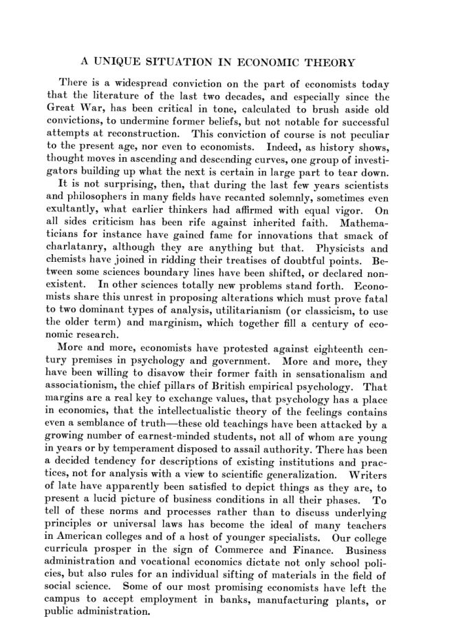

Boucke e a teoria econômica sem a velha psicologia
Leitura: 8 min
Para Boucke, abandonar o sensacionismo derruba juntos o utilitarismo e o marginalismo e obriga a economia a refazer o método: dinâmica, longo prazo e indução estatística.


Os currículos das faculdades americanas prosperam sob o signo do comércio e das finanças, e alguns dos economistas mais promissores deixaram o campus por bancos, fábricas e repartições públicas. É com esse retrato que O. Fred Boucke, de State College, Pensilvânia, descreve em dezembro de 1922 o que chama de situação singular na teoria econômica: um período em que a crítica desmontou a velha base da disciplina e nada ainda a substituiu.
Boucke parte de uma convicção que diz ser difundida: a literatura das duas últimas décadas, e sobretudo a posterior à Grande Guerra, foi crítica, desfez crenças antigas e pouco reconstruiu. O fenômeno não é exclusivo da época nem dos economistas; o pensamento, escreve, sobe e desce em curvas, e um grupo derruba o que o anterior construiu. Matemáticos, físicos e químicos também revisavam suas certezas.
O que os economistas estavam abandonando?
Na economia, a revisão atingia as premissas do século XVIII em psicologia e em governo. Os economistas renegavam o sensacionismo e o associacionismo, pilares da psicologia empírica britânica, e com eles três ensinamentos: que as margens são a chave dos valores de troca, que a psicologia tem lugar na economia e que a teoria intelectualista dos sentimentos contém alguma verdade. As alterações propostas, diz o autor, seriam fatais para as duas formas dominantes de análise de um século, o utilitarismo, ou classicismo, e o marginalismo.
No lugar da análise, crescia a descrição de instituições e práticas, sem busca de generalização científica. Descrever normas e processos de negócios, e não discutir princípios ou leis universais, tornara-se o ideal de muitos professores. Boucke admite que isso pode ser lido como prova de versatilidade dos economistas ou de apreço da indústria pelo conhecimento especializado, mas vê aí um significado mais profundo: até então, a economia fora uma ciência que buscava leis, enunciava relações quantitativas e se apoiava num sistema psicológico desenvolvido.
Como a economia chegou até ali?
O retrospecto começa pelos fisiocratas, que não elaboraram uma teoria da natureza humana, mas acreditavam em leis sociais permanentes, inspirados pelas pesquisas que culminaram nos Principia de Newton; seu feito mais famoso foi o Tableau Économique. A falta de uma psicologia definida, diz o autor, ajudaria a explicar por que não converteram a Europa. Desde então, os economistas apoiaram-se em traços da natureza humana para tornar suas doutrinas definidas e coerentes.
Smith introduziu teorias da natureza humana numa análise naturalista: alguns traços do homem garantiam a autopreservação e promoviam o bem-estar geral, e o laissez-faire se justificava porque interesse próprio e simpatia nivelavam preços e rendas. Os ricardianos seguiram outro caminho. Fizeram da economia uma ciência das relações de troca, a catalática, que sacrificou a amplitude à precisão lógica; com Malthus e os dois Mill, ela passou a depender de Hartley e Bentham para explicar os fenômenos mentais, e o problema central deixou de ser a produção para ser o preço e a distribuição.
John Stuart Mill, segundo Boucke, deu à economia uma metodologia para as ciências sociais nunca igualada. Com a psicologia associacionista, construiu o argumento pela dedução: nos fenômenos sociais os efeitos das causas se somam, e por isso a ciência social seria dedutiva. Pela Lógica de 1843, a economia utilitária tornou-se um sistema completo, em que o hedonismo era a teoria da motivação, embora os valores ainda fossem explicados de modo objetivo.
A escola histórica e o marginalismo romperam com isso?
A escola histórica combateu a psicologia hedonista e protestou contra a estática e a catalática, mas, para o autor, não quebrou a continuidade do pensamento. Buscava leis tanto quanto os adversários, e seus adeptos se revelaram mais historiadores que economistas: quando procuravam leis com afinco, convertiam-se a alguma forma de economia utilitária; quando não, produziam história e ética. Roscher, Knies e Schmoller, conclui, foram um interlúdio, não a causa da queda.
O marginalismo venceu, diz Boucke, porque concordava no fundo com o utilitarismo. Ambos acreditavam no sensacionismo e no hedonismo; ambos usavam dedução, estática, catalática e cosmopolitismo; ambos supunham liberdade de contrato e definições moldadas pela concorrência. O que os separava era a teoria do valor: objetiva nos ricardianos, que analisavam preço e renda como compostos de trabalho e dinheiro; subjetiva nos marginalistas, para quem a utilidade era a chave do valor de troca. O hedonismo virou, então, teoria dos valores além de teoria da motivação.
“O que separava o utilitarismo do marginalismo era essencialmente a diferença entre uma teoria objetiva e uma subjetiva do valor.” (“What separated utilitarianism from marginism was essentially the difference between an objective and a subjective theory of valuation.”)
O que é uma lei qualitativa e o que é uma quantitativa?
A segunda questão é o efeito, sobre a economia como ciência e como método, de rejeitar o sensacionismo. Boucke recorre a uma distinção conhecida dos lógicos. Leis qualitativas dizem que certos eventos se repetem sempre na mesma combinação, como sequências ou coexistências; explicar uma tempestade pelo vento, pela umidade, pela eletricidade e pela transmissão do som já é enunciar sua lei. Leis quantitativas medem também as grandezas e suas variações, e desde o Renascimento a correlação quantitativa exata é o ideal dos cientistas, como na lei de Boyle para os gases.
Aplicada às escolas, a distinção dá dois juízos. O utilitarismo acertava na análise do preço, que explicava por fatos distintos do preço ou por despesas, mas errou ao adotar o sensacionismo e um homem econômico que excluía outros elementos da valoração, e sofreu de uma estática abstrata demais; sua análise quantitativa fracassou pela discrepância inevitável entre quantidade de trabalho e preço. O marginalismo seria pior: usou uma psicologia falha para explicar o valor e, além disso, para buscar uma relação quantitativa exata entre ele e os preços.
O defeito central, para o autor, é um círculo vicioso. Como desejos e estados psíquicos não admitem medida, a intensidade do desejo e a ordem de preferência tinham de ser julgadas pelos preços pagos, e o recurso às margens não resolvia a petição de princípio, porque as próprias margens pediam explicação. Daí a pergunta do artigo: correlações e medidas objetivas podem substituir as subjetivas?
Que tarefas ficam para os economistas?
Boucke deixa de lado o livre-arbítrio e a separação entre fato e norma. Para o cientista, diz, causalidade é apenas um modo de enunciar a interdependência entre eventos; há regularidade nos fatos sociais como nos físicos, com diferença de grau. A ética não estuda eventos, e nenhum critério de bem último sai de uma descrição de fatos; mas, uma vez definido esse bem, os dados econômicos podem ser julgados por ele. A tarefa principal continua a ser substituir a velha metodologia, se a economia quiser seguir como ciência.
As novas obrigações vêm em lista. A dinâmica substitui a estática, e a visão de curto prazo deve ser completada por uma de longo prazo. Os eventos devem ser estudados como ocorrem no mundo real, e não como abstrações da natureza humana ou funções equacionadas. Pode ser preciso ir além da catalática. A dedução pode mudar de sentido diante de dados empíricos complexos, e é preciso examinar a indução estatística, a estatística descritiva e a seleção e classificação dos materiais a correlacionar. O ponto decisivo, prevê o autor, será a diferença entre as unidades da física e as estudadas por sociólogos e economistas.
O desfecho fica em aberto. Talvez só caiba uma análise qualitativa meio filosófica, meio científica; talvez diferentes medidas sirvam a diferentes assuntos. Por algum tempo, os economistas duvidarão de tudo. Mas, seja qual for a atitude diante do crítico ou do conservador, Boucke considera que a disciplina está às vésperas de grandes acontecimentos.
“Uma situação sem paralelo pode levar a realizações sem paralelo.” (“An unparalleled situation may lead to unparalleled achievements.”)
Na minha leitura
Na minha leitura, o argumento central do artigo é uma objeção de identificação: se a utilidade só se observa pelo preço, uma teoria que explica o preço pela utilidade não pode ser testada contra os dados que pretende explicar. A saída que Boucke propõe é trocar grandezas não observáveis por regularidades registradas, medidas e correlacionadas, ao lado de uma análise que acompanhe as mudanças no tempo.
O texto também separa duas questões que costumam vir juntas: a psicologia que fundamenta uma teoria e o método com que ela é construída. Ao mostrar que utilitaristas e marginalistas compartilhavam a dedução, a estática e as premissas jurídicas, e divergiam só na teoria do valor, o autor desloca o debate da escolha entre escolas para a escolha das unidades de análise e das técnicas de medida.
Glossário
- Sensacionismo
- doutrina psicológica que deriva todo o conteúdo da mente das sensações.
- Associacionismo
- teoria que explica a vida mental pela associação de ideias e sensações.
- Catalática
- economia entendida como ciência das trocas e dos preços.
- Marginalismo
- explicação do valor pela utilidade da última unidade consumida ou produzida.
- Estática e dinâmica
- análise de estados de equilíbrio, de um lado, e das mudanças no tempo, de outro.
- Indução estatística
- generalização a partir de regularidades observadas em dados numéricos.
Fontes
- A Unique Situation in Economic Theory — O. Fred Boucke (State College, Pennsylvania) (pp. 598–605). JSTOR · Internet Archive (PDF)
- Edição completa, com os demais artigos: Nº 179 do Arquivo.
Documento em domínio público (EUA, publicado antes de 1931), via JSTOR Early Journal Content e Internet Archive. Resumo e comentário do autor deste site, sem afiliação com a American Economic Association. Encontrou um erro? Escreva: a correção é publicada no próprio texto, com data.
← Nourse e os três princípios da cooperação ↑ Nº 179 · Nourse, as cooperativas, a crise da teoria e a base tarifária